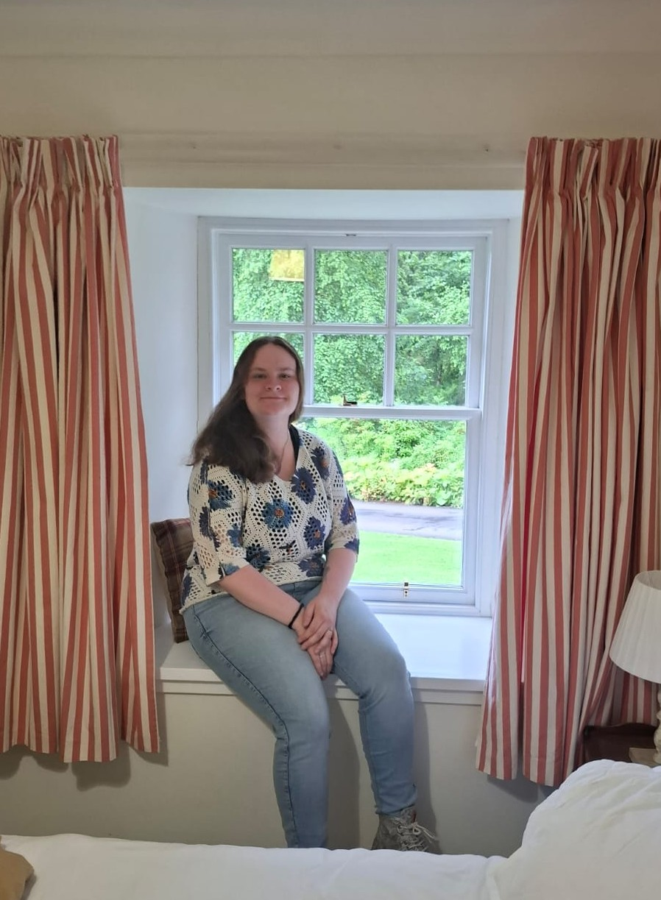

Hi everyone!
My name is Milou and I am 24 years old. I was born in Zwijndrecht in the Netherlands and I still live in that town to this day.
Last school year, I graduated from my BA English and Culture in Leiden, so I did not
stray far away from the place I have come to love over the past 3-4 years for my Master's. I have always been an avid reader and book collector (I have way too many books now though; my TBR is ever growing),
which is probably the main reason why I chose this MA. I actually knew I wanted to do this MA in my second year of my BA, so I even chose the minor "Boek, Boekhandel en Uitgeverij"
specifically to facilitate my admission to this programme. Besides reading, I am a big fan of crocheting(currently working on a larger project: this dragon!), gaming (mostly World of Warcraft), writing
and travelling whenever possible. I am quite an introvert, so I tend not to talk too much, but I will gladly have a conversation with anyone :)
Time for some lists!
I have lived in farm-like houses in my childhood, so we had a lot of space for all types of animals. Below are some of the animals I have owned in an ordered HTML list.
| Prior Knowledge | My technical skills are average, as I am able to operate the basics of technology without any problems, i.e.I can manage working on a laptop, phone, etc,. just fine. However, I know almost next to nothing about the underlying mechanics of how technology or certain programmes work. As for encoding, I took a course in Computer sciences in High School, so I do know the basics of, for example, HTML. It was a long time ago though, so I probably have forgotten quite a lot. |
| Expectations | During this course, I hope to learn even more about the connection between books and digital media, and how digitisation affects books and the publishing world. Moreover, I am looking forward to learning how to use different digital tools, such as encoding languages, to present information online that are relevant to books. Generally, I am keen to learn more about the modern aspects of society that are involved with the medium of the book. |